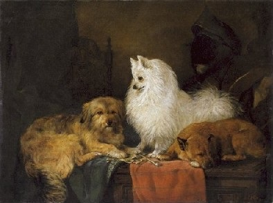

Volpino Italiano - History
This beutiful breed is really ancient and has it's roots as deep as 4000BC. This Italian breed was really popular among royalties, famous people (like Michelangelo), but also among farmers and normal folk because of its guard dog skills. This dog was originally kept as a guard dog. However, due to their lovely temperament and intelligence they also became popular as pets.
Despite the Volpino Italiano long history, the Volpino became unknown outside of Italy until the 1880's and is now quite rare but making a come back since 1980's. Volpinos still remain rare with about 4000 dogs worldwide which most of them are in Italy and after that in Scandinavia.